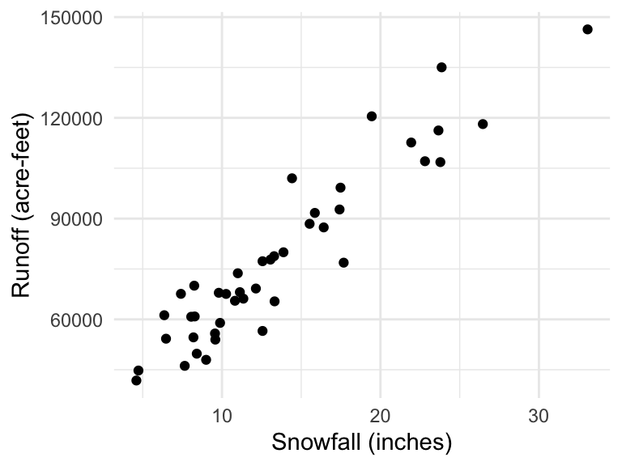

Homework 02
Due: Friday of Week 2 at start of class
There is a homework template available if you’d like to use that as a starter file, and copy and paste the code as needed.
ImportantImportant!
I will add problems after each class day. Be sure to check back here after each class meeting for new problems.
Problem 1: Runoff (again)
Below is the summary table produced when I fit the regression of the expected runoff given snowfall.
lm(Runoff ~ Precip, data = runoff) |> summary()
Call:
lm(formula = Runoff ~ Precip, data = runoff)
Residuals:
Min 1Q Median 3Q Max
-17603.8 -5338.0 332.1 3410.6 20875.6
Coefficients:
Estimate Std. Error t value Pr(>|t|)
(Intercept) 27014.6 3218.9 8.393 1.93e-10 ***
Precip 3752.5 215.7 17.394 < 2e-16 ***
---
Signif. codes: 0 '***' 0.001 '**' 0.01 '*' 0.05 '.' 0.1 ' ' 1
Residual standard error: 8922 on 41 degrees of freedom
Multiple R-squared: 0.8807, Adjusted R-squared: 0.8778
F-statistic: 302.6 on 1 and 41 DF, p-value: < 2.2e-16Calculate a 80% confidence interval for the slope coefficient. Show your work.
Interpret the confidence interval you calculated in part (b) in the context of the problem
Based on your confidence interval in (b), is there convincing evidence of a relationship between snowfall and runoff? Explain.
The first data point in the dataset \((x_1, y_1)\) has
Precip = 6.47andRunoff = 54235. Find \(\hat{y}_1\) and \(\epsilon_1\)
Problem 2: Hubble (again)
The ex0725 data points below are measured distances and recession velocities for 10 clusters of nebulae, much farther from earth than Hubble’s data.
library(Sleuth3)
ex0725 Distance Velocity
1 1.80 890
2 7.25 3810
3 7.00 4638
4 9.00 4820
5 11.00 5230
6 13.80 7500
7 22.00 11800
8 32.00 19600
9 4.20 2350
10 2.15 630Fit a linear regression model to this data and report the fitted equation
Perform a formal hypothesis test to assess whether the data is consistent with Hubble’s theory (that the intercept is zero)
Problem 3: Baby birth weights vs father’s age
US Department of Health and Human Services, Centers for Disease Control and Prevention collect information on births recorded in the country. The data used here are a random sample of 1000 births from 2014. Here, we study the relationship between the father’s age and the weight of the baby.
births14 <- openintro::births14
Tip
This code is shorthand for: look in the {openintro} R package for an object called births14
- Make a scatterplot of birth weight (
weight) as the response variable and father’s age (fage) as the explanatory variable. Overlay a linear regression line and describe the relationship you see.
# your code here- Find and report the linear regression equation
# your code here- Do the data provide convincing evidence that there is a relationship between father’s age and baby’s birth weight? State the null and alternative hypotheses, report the p-value, and state your conclusion.
# your code here- Based on your conclusion, is father’s age a useful predictor of baby’s weight?